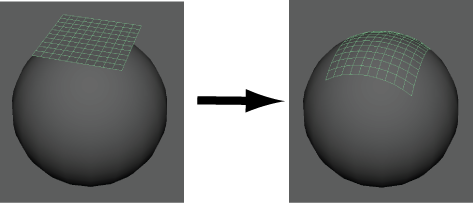
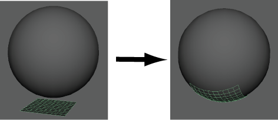

“一致”(Conform)可将一个对象（包裹器）的顶点包裹到另一个对象（目标）的曲面上。
注： 在 Maya 2015 和早期版本中，“一致”(Conform)称为“收缩包裹”(Shrinkwrap)，并位于“建模工具包”(Modeling Toolkit)菜单中。
使顶点与曲面保持一致
- 在 Maya 中，打开一个至少包含两个多边形网格的场景。
- 将目标对象变成激活的曲面。请参见设置激活的曲面。
- 选择场景中的包裹器网格。
- 在主菜单中，选择“网格 > 一致”(Mesh > Conform)。
包裹器网格会自动捕捉到目标网格的曲面。包裹器网格的放置决定了要包裹的目标网格部分。在下面的示例中，球体被放置在世界坐标系原点。平面将包裹到球体的不同部位，具体取决于其原始位置：
- （可选）激活“四边形绘制”(Quad Draw)工具并松弛包裹器网格上的顶点。请参见使用四边形绘制松弛顶点。
 ），可以更改此行为。
），可以更改此行为。